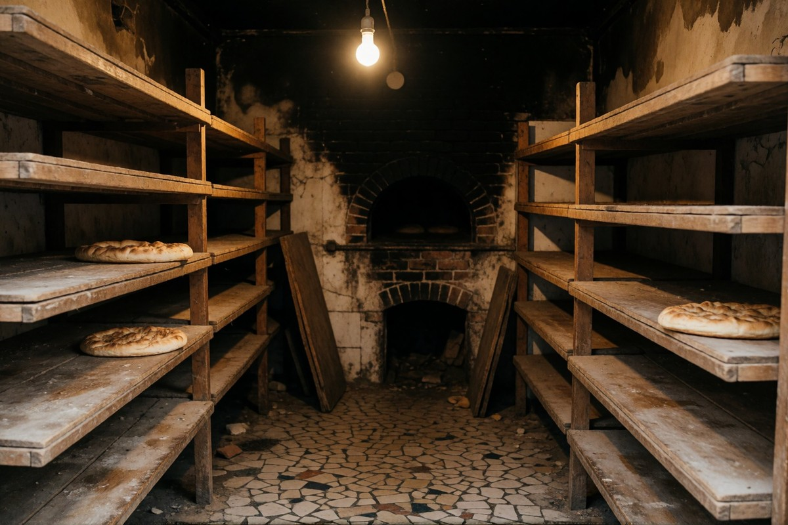

Geopolitica · 26 novembre 2026
«Non abbiamo soldi»: l'Iran stremato, e a dirlo è il presidente

Pezeshkian lo ha ammesso in televisione: pane razionato in sette province, corrente staccata a rotazione, prezzi degli alimentari più che raddoppiati in un anno. E da sei giorni i camionisti scioperano in venti città.
di Franco Zanghì
«Non abbiamo soldi». A dirlo in televisione è stato Masoud Pezeshkian, presidente dell'Iran, eletto nel 2024 e considerato un moderato. La frase è stata ripresa il 26 novembre 2026 dal Wall Street Journal, in un servizio sulla «guerra silenziosa» che sta logorando il Paese.
Il giorno dopo quella trasmissione, sabato 21 novembre, Pezeshkian era tornato sul punto davanti a investitori e produttori, a Teheran: secondo l'agenzia Anadolu, che cita l'IRNA, ha parlato di una guerra silenziosa «molto più difficile di una guerra in cui si lanciano missili». Il quotidiano Gulf News riporta la sua frase testuale: «È una guerra economica, e non una guerra semplice».
Il blocco, e il pane
La guerra che coinvolge l'Iran è cominciata a febbraio 2026 e dura da quasi nove mesi. Da luglio, dopo il crollo di una tregua provvisoria, gli Stati Uniti hanno ripristinato il blocco navale sui porti iraniani: il petrolio fatica a uscire e i soldi non entrano.
Il governo ha tagliato i sussidi su energia e cibo. In sette province su trentuno sono state ridotte le quote di farina e di pane a prezzo calmierato: a Teheran, racconta il Wall Street Journal, un pensionato ha pagato un pane sangak 35 centesimi di dollaro, circa sette volte il prezzo sussidiato. La pensione media mensile è di circa 64 dollari. La compagnia elettrica Tavanir ha cominciato a staccare la corrente a rotazione, fino a due ore al giorno in alcune zone.
I numeri confermano il racconto. Secondo il Centro statistico dell'Iran, ripreso dalla Reuters, a ottobre i prezzi di cibo e bevande erano cresciuti del 112,6 per cento in un anno: più che raddoppiati. E il rial è crollato: martedì 24 novembre servivano circa 2 milioni e 830 mila rial per un dollaro, e venerdì 27 il dollaro ne valeva più di 2 milioni e 930 mila sul mercato non ufficiale. All'epoca dell'accordo sul nucleare del 2015 ne bastavano circa 32 mila.
Le proteste
Finora erano proteste piccole: fornai a Zanjan per il prezzo della farina, insegnanti e pensionati per il costo della vita. Ad Abdanan, nel sud-ovest del Paese, centinaia di persone sono scese in piazza dopo un incidente stradale che ha ucciso tredici lavoratori di una società di raffinazione, chiedendo le dimissioni dei dirigenti ritenuti responsabili.
Da venerdì 27 novembre, però, c'è altro: lo sciopero dei camionisti è al sesto giorno in venti città, annunciato dall'Union of Truck Drivers' Associations. Chiedono tariffe più alte, perché pneumatici, olio e gasolio sono prezzati in dollari. «Finché non otterremo quello che ci spetta, non trasporteremo merci», dicono. Il governo non ha risposto, e il rischio è l'interruzione delle forniture interne.
Lo stesso 27 novembre il governatore della banca centrale ha ammesso che l'accesso alle valute estere è limitato, che le entrate dello Stato sono sotto pressione e che i rincari erodono il potere d'acquisto delle famiglie. Le esportazioni non petrolifere sono calate del 28,2 per cento fra aprile e agosto rispetto all'anno prima. L'Iraq, dopo una richiesta americana, ha chiuso due valichi con l'Iran, lasciando bloccati circa 300 camion.
Che cosa ne dicono a Washington
Scott Bessent, segretario al Tesoro degli Stati Uniti, è l'uomo delle sanzioni. In un'intervista del 20 novembre ha detto che i vertici iraniani sono sotto una pressione fortissima e che membri dei Guardiani della rivoluzione potrebbero rivoltarsi l'uno contro l'altro. Non ha portato prove verificabili di una rottura imminente, e Gulf News osserva che le divergenze di cui si parla non dimostrano che la leadership o i Guardiani si stiano spaccando.
Abbas Araghchi, ministro degli Esteri iraniano, dice che Teheran resta pronta a trattare se Washington farà dei passi: mediatori del Qatar e del Pakistan sono ancora al lavoro, ma il memorandum d'intesa del 18 giugno è fermo sulla libertà di navigazione nello stretto di Hormuz.
Perché ci riguarda
Perché un Iran alla fame è un Iran più imprevedibile, affacciato su uno stretto da cui passa una parte importante del petrolio e del gas del mondo. E quando Hormuz trema, da noi salgono la benzina e le bollette.
Quando un presidente dice in televisione «non abbiamo soldi», non parla solo al suo popolo: parla anche a chi siede dall'altra parte del tavolo. Il passaggio da guardare è l'inverno. Se nelle città mancheranno gas e corrente si capirà se la pressione spinge Teheran a trattare, o se spinge il regime a stringere ancora la presa.
Fonti
- Gulf News, «Iran Faces Economic Turmoil as US Blockade Deepens and Subsidies Are Cut», 27 novembre 2026
- Gulf News, «Iran Faces Economic War Harder Than Missiles», 22 novembre 2026
- Political Wire, «A “Silent War” Grips Iran as Its Economy Strains» (dal Wall Street Journal), 26 novembre 2026
- Seoul Economic Daily, «“We Have No Money”, Iran's President Says as Prices Soar», 27 novembre 2026
- Anadolu Agency, «Iran facing silent economic war that is tougher than missile war, says President Pezeshkian», 21 novembre 2026
- Arab News (servizio AP), «Protesters rally in a town in southwestern Iran after a road crash killed 13 refinery workers», 18 novembre 2026
- JFeed, «Iranian Rial Hits Record Low of 2.83 Million per Dollar», 24 novembre 2026
- Iran International, «Iran's central bank chief admits economic squeeze is hurting families», 27 novembre 2026
- The National, «Twenty cities, one voice: Iranian lorry drivers persist with strike», 27 novembre 2026
Dati provvisori alla data di pubblicazione: il cambio del rial si muove di giorno in giorno e viene qui indicato con la data accanto. Sull'episodio di Abdanan le fonti non coincidono: l'agenzia AP parla di un incidente stradale che ha ucciso tredici lavoratori di una società di raffinazione, mentre il Wall Street Journal lo colloca in un impianto petrolchimico ad Abadan, che è un'altra città; qui si è seguita la ricostruzione dell'AP, che ha un reportage sul posto. Discordante anche il numero dei fermati fra i manifestanti, e per questo non viene indicato. Sul conteggio delle città in sciopero le fonti dello stesso giorno danno 18 e 20.